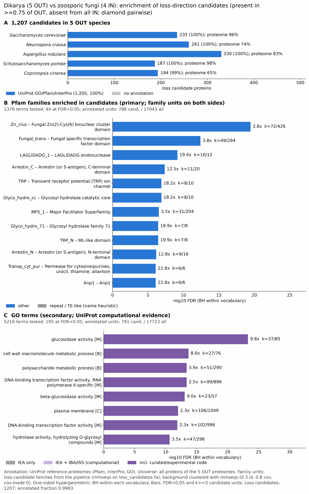

zoosporic dikarya: functional enrichment (loss)
One-sided hypergeometric test per term; Benjamini-Hochberg FDR within each scope, level and vocabulary. Candidates are the loss candidates: gene families present in the OUT group and absent from the IN group. Universe: proteome. Background clustered: True (43642 sequences in 28407 clusters, mmseqs easy-cluster --min-seq-id 0.3 -c 0.8). Family level: one unit per candidate family and per background cluster.
Sources: Pfam: 2026-01-27-Pfam38.2; InterPro entries: 110.0; GO: releases/2026-07-26; analysis generated 2026-10-12T18:17:56. Source tables: studies/fungi/zoosporic_dikarya/analysis/enrichment/outputs/loss/proteome_clustered.
Full record: PROVENANCE. Run report: report.html.
- Annotation provenance is not fully recorded: PROVENANCE.yaml lists the per-species annotation files and their checksums, but not the UniProt release they come from.
- GO results are secondary. GO annotations include computational evidence (IEA, IBA); the GO evidence column shows if a term has non-IEA support.
- Candidate families (pipeline clustering of candidates) and background clusters (mmseqs clustering of the background proteome) are made by different runs, so family-level counts are not fully comparable.
Summary figure

Annotation coverage
Fraction of proteins with at least one term per vocabulary. Universe = all proteins of the species; candidates = the candidate set.
| Species | Set | Proteins | Pfam | Pfam clan | InterPro | GO | Any |
|---|---|---|---|---|---|---|---|
| Scer | universe | 6066 | 84.0% | 65.3% | 87.8% | 95.0% | 95.8% |
| Scer | candidates | 235 | 91.9% | 67.7% | 99.2% | 99.2% | 100.0% |
| Ncra | universe | 9759 | 68.5% | 54.6% | 73.4% | 64.3% | 74.1% |
| Ncra | candidates | 261 | 93.1% | 69.3% | 99.2% | 90.4% | 99.6% |
| Anid | universe | 10561 | 77.5% | 64.5% | 82.7% | 73.9% | 83.4% |
| Anid | candidates | 330 | 95.8% | 76.4% | 100.0% | 92.4% | 100.0% |
| Spom | universe | 5129 | 89.2% | 69.6% | 91.5% | 98.0% | 98.3% |
| Spom | candidates | 187 | 94.7% | 67.4% | 99.5% | 100.0% | 100.0% |
| Ccin | universe | 13334 | 57.9% | 47.0% | 64.2% | 50.3% | 64.6% |
| Ccin | candidates | 194 | 93.3% | 74.7% | 99.0% | 88.1% | 99.5% |
| ALL_OUT | universe | 44849 | 71.9% | 57.8% | 76.9% | 70.4% | 79.2% |
| ALL_OUT | candidates | 1207 | 93.9% | 71.5% | 99.4% | 93.8% | 99.8% |
Tests summary
Per vocabulary: terms with FDR < 0.05 / terms tested. Protein level counts proteins; family level counts candidate families and background clusters.
| Scope | Level | Cand. units | Pfam sig / tested | Pfam clan sig / tested | InterPro sig / tested | GO sig / tested |
|---|---|---|---|---|---|---|
| whole_set | family | 844 | 44 / 1376 | 18 / 385 | 90 / 2842 | 195 / 5216 |
| whole_set | protein | 1207 | 107 / 3373 | 30 / 472 | 222 / 7392 | 305 / 6761 |
| Anid | family | 294 | 5 / 350 | 3 / 239 | 11 / 856 | 58 / 2797 |
| Anid | protein | 330 | 10 / 461 | 7 / 254 | 19 / 1107 | 74 / 2987 |
| Ccin | family | 161 | 3 / 307 | 3 / 224 | 6 / 764 | 36 / 2056 |
| Ccin | protein | 194 | 6 / 431 | 5 / 238 | 14 / 1039 | 50 / 2198 |
| Ncra | family | 252 | 3 / 303 | 7 / 238 | 8 / 761 | 55 / 2597 |
| Ncra | protein | 261 | 5 / 368 | 5 / 244 | 12 / 914 | 60 / 2700 |
| Scer | family | 207 | 3 / 167 | 4 / 174 | 6 / 483 | 43 / 3449 |
| Scer | protein | 235 | 7 / 263 | 9 / 199 | 17 / 708 | 62 / 3723 |
| Spom | family | 172 | 2 / 161 | 5 / 169 | 6 / 458 | 78 / 3051 |
| Spom | protein | 187 | 9 / 222 | 8 / 180 | 14 / 601 | 92 / 3187 |
Top 25 Pfam terms (whole set, family level)
25 rows shown, ordered by FDR then p-value; 25 have FDR < 0.05 (bold).
| Term | Name | k / N cand. | n / M bg | Fold | FDR (BH) |
|---|---|---|---|---|---|
| PF00172 | Zn_clus: Fungal Zn(2)-Cys(6) binuclear cluster domain | 72 / 788 | 426 / 17943 | 3.849 | 3.40e-20 |
| PF04082 | Fungal_trans: Fungal specific transcription factor domain | 49 / 788 | 294 / 17943 | 3.795 | 3.99e-13 |
| PF00961 | LAGLIDADG_1: LAGLIDADG endonuclease | 10 / 788 | 12 / 17943 | 18.975 | 7.06e-10 |
| PF02752 | Arrestin_C: Arrestin (or S-antigen), C-terminal domain | 11 / 788 | 20 / 17943 | 12.524 | 4.40e-08 |
| PF06011 | TRP: Transient receptor potential (TRP) ion channel | 8 / 788 | 10 / 17943 | 18.216 | 1.28e-07 |
| PF11790 | Glyco_hydro_cc: Glycosyl hydrolase catalytic core | 8 / 788 | 10 / 17943 | 18.216 | 1.28e-07 |
| PF07690 | MFS_1: Major Facilitator Superfamily | 31 / 788 | 204 / 17943 | 3.46 | 2.92e-07 |
| PF03659 | Glyco_hydro_71: Glycosyl hydrolase family 71 | 7 / 788 | 8 / 17943 | 19.924 | 3.61e-07 |
| PF14558 | TRP_N: ML-like domain | 7 / 788 | 8 / 17943 | 19.924 | 3.61e-07 |
| PF00339 | Arrestin_N: Arrestin (or S-antigen), N-terminal domain | 9 / 788 | 16 / 17943 | 12.808 | 6.93e-07 |
| PF02133 | Transp_cyt_pur: Permease for cytosine/purines, uracil, thiamine, allantoin | 6 / 788 | 6 / 17943 | 22.77 | 8.08e-07 |
| PF03452 | Anp1: Anp1 | 6 / 788 | 6 / 17943 | 22.77 | 8.08e-07 |
| PF00150 | Cellulase: Cellulase (glycosyl hydrolase family 5) | 9 / 788 | 18 / 17943 | 11.385 | 2.09e-06 |
| PF03856 | SUN: Beta-glucosidase (SUN family) | 5 / 788 | 5 / 17943 | 22.77 | 1.39e-05 |
| PF10355 | Ytp1: Protein YTP1-like, C-terminal | 5 / 788 | 5 / 17943 | 22.77 | 1.39e-05 |
| PF19117 | Mim2: Mitochondrial import 2 | 5 / 788 | 5 / 17943 | 22.77 | 1.39e-05 |
| PF05637 | Glyco_transf_34: galactosyl transferase GMA12/MNN10 family | 6 / 788 | 9 / 17943 | 15.18 | 4.04e-05 |
| PF09994 | T6SS_Tle1-like_cat: T6SS, Phospholipase effector Tle1-like, catalytic domain | 6 / 788 | 9 / 17943 | 15.18 | 4.04e-05 |
| PF03595 | SLAC1: Voltage-dependent anion channel | 6 / 788 | 10 / 17943 | 13.662 | 9.20e-05 |
| PF04479 | RTA1: RTA1 like protein | 7 / 788 | 16 / 17943 | 9.962 | 1.71e-04 |
| PF11951 | Fungal_trans_2: Fungal specific transcription factor domain | 15 / 788 | 85 / 17943 | 4.018 | 2.55e-04 |
| PF02076 | STE3: Pheromone A receptor | 5 / 788 | 9 / 17943 | 12.65 | 9.81e-04 |
| PF08552 | Kei1: Inositolphosphorylceramide synthase subunit Kei1 | 4 / 788 | 5 / 17943 | 18.216 | 9.81e-04 |
| PF08656 | DASH_Dad3: DASH complex subunit Dad3 | 4 / 788 | 5 / 17943 | 18.216 | 9.81e-04 |
| PF25459 | AIM3_BBC1_C: AIM3/BBC1 Cysteine proteinase-fold domain | 4 / 788 | 5 / 17943 | 18.216 | 9.81e-04 |
Top 25 InterPro terms (whole set, family level)
25 rows shown, ordered by FDR then p-value; 25 have FDR < 0.05 (bold).
| Term | Name | k / N cand. | n / M bg | Fold | FDR (BH) |
|---|---|---|---|---|---|
| IPR036864 | Homologous_superfamily:Zn(2)-C6 fungal-type DNA-binding domain superfamily | 74 / 837 | 473 / 19709 | 3.684 | 3.26e-19 |
| IPR001138 | Domain:Zn(2)Cys(6) fungal-type DNA-binding domain | 74 / 837 | 485 / 19709 | 3.593 | 7.56e-19 |
| IPR007219 | Domain:Xylanolytic transcriptional activator-like, regulatory domain | 50 / 837 | 298 / 19709 | 3.951 | 5.79e-14 |
| IPR004860 | Domain:Homing endonuclease, LAGLIDADG domain | 12 / 837 | 15 / 19709 | 18.838 | 9.16e-12 |
| IPR050357 | Family:Arrestin domain-containing protein | 13 / 837 | 22 / 19709 | 13.914 | 2.21e-10 |
| IPR027434 | Homologous_superfamily:Homing endonuclease | 12 / 837 | 18 / 19709 | 15.698 | 2.21e-10 |
| IPR050386 | Family:Glycosyl Hydrolase 5 (Cellulase A) | 11 / 837 | 16 / 19709 | 16.189 | 1.11e-09 |
| IPR011022 | Domain:Arrestin-like, C-terminal domain | 12 / 837 | 21 / 19709 | 13.456 | 2.34e-09 |
| IPR032800 | Domain:ML-like domain | 8 / 837 | 9 / 19709 | 20.931 | 2.80e-08 |
| IPR036259 | Homologous_superfamily:MFS transporter superfamily | 40 / 837 | 299 / 19709 | 3.15 | 3.65e-08 |
| IPR050613 | 15 / 837 | 45 / 19709 | 7.849 | 6.10e-08 | |
| IPR017853 | Homologous_superfamily:Glycoside hydrolase superfamily | 28 / 837 | 163 / 19709 | 4.045 | 6.10e-08 |
| IPR010308 | Domain:TRP, C-terminal | 8 / 837 | 10 / 19709 | 18.838 | 8.09e-08 |
| IPR024655 | Domain:Asl1-like, glycosyl hydrolase catalytic domain | 8 / 837 | 10 / 19709 | 18.838 | 8.09e-08 |
| IPR053183 | 8 / 837 | 10 / 19709 | 18.838 | 8.09e-08 | |
| IPR014752 | Homologous_superfamily:Arrestin-like, C-terminal domain superfamily | 15 / 837 | 47 / 19709 | 7.515 | 8.71e-08 |
| IPR011701 | Family:Major facilitator superfamily | 31 / 837 | 204 / 19709 | 3.578 | 1.14e-07 |
| IPR040241 | Family:Transient receptor potential channel Flc/Pkd2-like | 8 / 837 | 11 / 19709 | 17.125 | 2.38e-07 |
| IPR005197 | Family:Glycoside hydrolase family 71 | 7 / 837 | 8 / 19709 | 20.604 | 2.80e-07 |
| IPR011021 | Domain:Arrestin-like, N-terminal | 9 / 837 | 16 / 19709 | 13.245 | 5.35e-07 |
| IPR001248 | Family:Purine-cytosine permease | 6 / 837 | 6 / 19709 | 23.547 | 7.13e-07 |
| IPR005109 | Family:Mannan polymerase complex subunit ANP1/MNN9/VAN1 | 6 / 837 | 6 / 19709 | 23.547 | 7.13e-07 |
| IPR052086 | 6 / 837 | 6 / 19709 | 23.547 | 7.13e-07 | |
| IPR001547 | Domain:Glycoside hydrolase, family 5 | 9 / 837 | 19 / 19709 | 11.154 | 3.21e-06 |
| IPR005556 | Domain:Secreted beta-glucosidase SUN1-like domain | 5 / 837 | 5 / 19709 | 23.547 | 1.39e-05 |
Top 15 GO terms (whole set, family level) — secondary, computational evidence (IEA/IBA) included
15 rows shown, ordered by FDR then p-value; 15 have FDR < 0.05 (bold).
| Term | Name | k / N cand. | n / M bg | Fold | FDR (BH) | GO evidence | Families with non-IEA |
|---|---|---|---|---|---|---|---|
| GO:0015926 | molecular_function:glucosidase activity | 37 / 791 | 85 / 17723 | 9.753 | 5.39e-24 | has_non_IEA | 27 |
| GO:0044036 | biological_process:cell wall macromolecule metabolic process | 27 / 791 | 76 / 17723 | 7.96 | 2.09e-14 | has_non_IEA | 22 |
| GO:0005976 | biological_process:polysaccharide metabolic process | 51 / 791 | 290 / 17723 | 3.94 | 4.16e-14 | has_non_IEA | 29 |
| GO:0000981 | molecular_function:DNA-binding transcription factor activity, RNA polymerase II-specific | 99 / 791 | 896 / 17723 | 2.476 | 4.16e-14 | has_non_IEA | 58 |
| GO:0008422 | molecular_function:beta-glucosidase activity | 23 / 791 | 57 / 17723 | 9.041 | 8.40e-14 | has_non_IEA | 16 |
| GO:0005886 | cellular_component:plasma membrane | 106 / 791 | 1049 / 17723 | 2.264 | 9.92e-13 | has_non_IEA | 87 |
| GO:0003700 | molecular_function:DNA-binding transcription factor activity | 102 / 791 | 996 / 17723 | 2.295 | 1.31e-12 | has_non_IEA | 64 |
| GO:0004553 | molecular_function:hydrolase activity, hydrolyzing O-glycosyl compounds | 47 / 791 | 298 / 17723 | 3.534 | 2.35e-11 | has_non_IEA | 33 |
| GO:0009986 | cellular_component:cell surface | 20 / 791 | 54 / 17723 | 8.298 | 3.45e-11 | has_non_IEA | 12 |
| GO:0022857 | molecular_function:transmembrane transporter activity | 93 / 791 | 920 / 17723 | 2.265 | 4.07e-11 | has_non_IEA | 57 |
| GO:0005215 | molecular_function:transporter activity | 97 / 791 | 1002 / 17723 | 2.169 | 1.43e-10 | has_non_IEA | 60 |
| GO:0016798 | molecular_function:hydrolase activity, acting on glycosyl bonds | 49 / 791 | 342 / 17723 | 3.21 | 1.90e-10 | has_non_IEA | 34 |
| GO:0140110 | molecular_function:transcription regulator activity | 113 / 791 | 1264 / 17723 | 2.003 | 2.28e-10 | has_non_IEA | 75 |
| GO:0016020 | cellular_component:membrane | 300 / 791 | 4723 / 17723 | 1.423 | 3.26e-10 | has_non_IEA | 193 |
| GO:0070086 | biological_process:ubiquitin-dependent endocytosis | 14 / 791 | 29 / 17723 | 10.817 | 1.61e-09 | has_non_IEA | 12 |
Actin cytoskeleton controls
Known actin-related families and how many of their proteins pass each filter. Protein ID columns are left out.
| control | pfam_ids | desc_regex | OUT_universe | OUT_in_matrix | OUT_pass_outgroup_rule | candidates | near_miss_in1 | near_miss_in2 | n_Scer | n_Ncra | n_Anid | n_Spom | n_Ccin | n_Batrdend | n_Spizpunc | n_Syncendo | n_Cateangu |
|---|---|---|---|---|---|---|---|---|---|---|---|---|---|---|---|---|---|
| Arp2/3 ARPC2 (P34-Arc) | PF04045 | 5 | 5 | 5 | 0 | 0 | 0 | 1 | 1 | 1 | 1 | 1 | 1 | 1 | 1 | 1 | |
| Arp2/3 ARPC3 (P21-Arc) | PF04062 | 5 | 5 | 5 | 0 | 0 | 0 | 1 | 1 | 1 | 1 | 1 | 1 | 1 | 1 | 1 | |
| Arp2/3 ARPC4 | PF05856 | 5 | 5 | 5 | 0 | 0 | 0 | 1 | 1 | 1 | 1 | 1 | 1 | 1 | 1 | 1 | |
| Arp2/3 ARPC5 (P16-Arc) | PF04699 | 5 | 5 | 5 | 0 | 0 | 0 | 1 | 1 | 1 | 1 | 1 | 1 | 1 | 1 | 1 | |
| Arp2/3 ARPC1 (description only) | arp2/3 complex.*(41|p41|subunit 1)|ARPC1 | 0 | 0 | 0 | 0 | 0 | 0 | 0 | 0 | 0 | 0 | 0 | 0 | 0 | 1 | 0 | |
| Arp2 / Arp3 (description only) | actin-related protein (2|3)\b|\bARP[23]\b | 32 | 32 | 32 | 0 | 0 | 0 | 7 | 6 | 7 | 7 | 5 | 6 | 6 | 7 | 7 | |
| WAVE complex NCKAP1 | PF09735 | 0 | 0 | 0 | 0 | 0 | 0 | 0 | 0 | 0 | 0 | 0 | 1 | 1 | 1 | 1 | |
| WAVE complex CYFIP (FragX_IP) | PF05994 | 0 | 0 | 0 | 0 | 0 | 0 | 0 | 0 | 0 | 0 | 0 | 1 | 1 | 1 | 1 | |
| WAVE complex ABI | PF07815|PF27594 | 0 | 0 | 0 | 0 | 0 | 0 | 0 | 0 | 0 | 0 | 0 | 0 | 0 | 0 | 0 | |
| SCAR/WAVE (SCAR_helical) | PF27569 | 0 | 0 | 0 | 0 | 0 | 0 | 0 | 0 | 0 | 0 | 0 | 0 | 0 | 0 | 0 | |
| WASP family (WH1) | PF00568 | 6 | 5 | 5 | 0 | 0 | 0 | 1 | 1 | 1 | 1 | 2 | 1 | 1 | 1 | 1 | |
| WH2 motif (WASP, WAVE, others) | PF02205 | 10 | 10 | 10 | 0 | 1 | 3 | 2 | 1 | 3 | 2 | 2 | 3 | 1 | 1 | 1 | |
| Formin FH2 | PF02181 | 9 | 9 | 8 | 1 | 1 | 0 | 2 | 1 | 1 | 3 | 2 | 4 | 4 | 3 | 3 | |
| Formin Drf_GBD / Drf_FH3 / Drf_DAD | PF06371|PF06367|PF06345 | 12 | 12 | 11 | 5 | 0 | 0 | 1 | 2 | 2 | 4 | 3 | 3 | 4 | 2 | 3 | |
| Ena/VASP (VASP_tetra) | PF08776 | 0 | 0 | 0 | 0 | 0 | 0 | 0 | 0 | 0 | 0 | 0 | 0 | 0 | 0 | 0 | |
| Coronin (description only) | coronin | 5 | 5 | 5 | 0 | 0 | 0 | 1 | 1 | 1 | 1 | 1 | 1 | 3 | 1 | 1 | |
| Cortactin (HS1_rep) | PF02218 | 0 | 0 | 0 | 0 | 0 | 0 | 0 | 0 | 0 | 0 | 0 | 0 | 0 | 0 | 1 | |
| Myosin 2 tail (Myosin_tail_1) | PF01576 | 1 | 1 | 1 | 0 | 0 | 0 | 0 | 0 | 0 | 0 | 1 | 1 | 1 | 1 | 0 | |
| Myosin head (all myosins) | PF00063 | 24 | 24 | 24 | 0 | 0 | 0 | 5 | 4 | 5 | 5 | 5 | 7 | 9 | 6 | 8 |
Page written by bin/generate_enrichment_page.py.